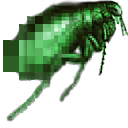
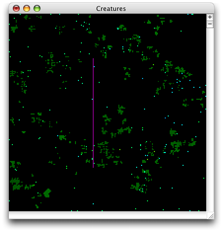
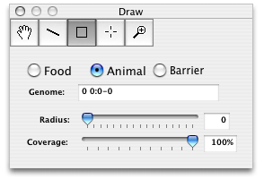
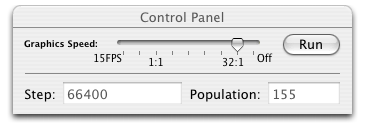
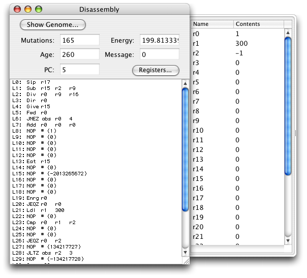
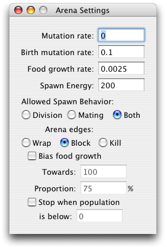
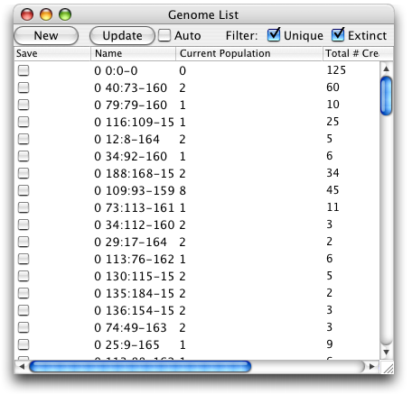
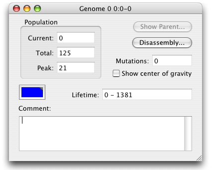
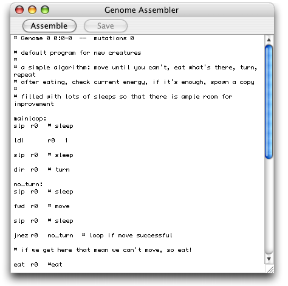
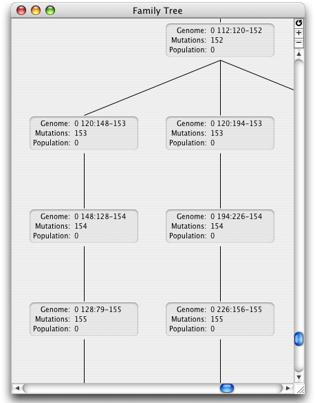

Creatures User's Guide
Welcome to Creatures. Creatures is an artificial-life program with tools for the exploration of evolution and genetic programming.
User's Guide Table of Contents:
This section shows you how to get started quickly with a new world in Creatures.
Open Creatures. (If you're reading this, you've probably done that already.) In the Draw window, click on the square tool. The window will expand to show the options available for that tool. Select the Food button, and enter 150 for Food Value. Crank the Radius slider as far up as it will go. Then move to the arena window, the one that's full of black, and click. This should leave a green square behind. It may be necessary to click twice, once to activate the window and a second time to place the food.
Back to the Draw window, click the Animal button. Change the Coverage to a small value, around 5%, and then click over the square you made before. You should leave a speckling of blue animals behind. Again you may need to click twice. Once you've done that, click Run in the Control panel, and off you go!
Now that you know how to start a simple world, it's time for the grand tour.
The Arena WindowThe Arena window is the principle window. It shows you what's going on in your world and lets you interact with it.

The Arena is a grid like a giant chessboard. Each square can contain food, a barrier, an animal, or nothing. Black represents nothing. Purple represents a barrier. Varying shades of green represent food. The higher the food value of a piece of food, the brighter green it is. Finally, animals are varying colors. They generally start out blue, and change as time goes on. This helps with identification of different kinds of animals, because animals that are the same kind will also be the same color.
Only one arena can be open at a time. If you create a new arena or open a file, the one on your screen will automatically close. If you close the Arena window, Creatures will quit.
Note that you can create arenas almost as large as you want, as long as you have enough memory for it. The general rule is that you need about 10 bytes of memory per grid square. So if you want to make a 1000x1000 arena, it will use about 1000*1000*10 bytes of memory, or about 10MB. A 10,000x10,000 arena will require about 1GB of memory. 10,000x10,000 is the maximum size allowed.
The Draw panel is a small tool window that lets you interact with and edit your arena.

The Draw panel holds tools and lets you edit the options for a tool if that tool has any options to edit. The interesting thing, of course, is not the panel, but the tools it contains. So, here they are from left to right.
The Hand Tool
The hand tool lets you scroll around the arena without needing to use the scroll bars. This can be useful for exploring large arenas, or when zoomed in. Click and drag in the arena to use it.
The Line Tool
The line tool lets you place horizontal and vertical lines of barriers into your arena. Click and drag in the arena to place a line.
The Square Tool
The square tool places squares of objects in the arena. It can place food, animals, or barriers. When this tool is selected, a panel will appear with the options for this tool.
At the top, you can select what kind of object to create, either food, animals, or barriers. At the bottom, you can select the square's size and coverage. Coverage is a percentage of the area of the square that will actually contain the object in question once the mouse is clicked. This is useful for placing scattered animals or barriers, and of course it works on food as well.
In the middle is a small area that changes depending on what object type you picked. If you're placing a barrier, then it's empty, because there aren't any other options.
If you're placing food, you have two additional options. Food Value is the energy value of each piece of food you place. This can range from 0 to 255. Typical values are around 100, although it depends greatly on what you want to do. Second is the overwrite checkbox. If this is not checked, then other objects will not be erased when you attempt to put food there. This is very useful for placing food near barriers or animals without accidentally erasing them. If the overwrite checkbox is checked, then the food will erase any animals or barriers that it covers. (Note that when placing animals and barriers, the square tool always acts as if the overwrite box were checked.)
Note that food with value 0 is empty space. Using the overwrite checkbox with food value 0 is a way to have an eraser.
If you're placing animals, you'll see a Genome text box. You can drag genomes into this box from the genome list or from the Family Tree window to place animals of different types into the arena. By default, this box contains a simple default genome for you to use.
The Inspector Tool
The inspector tool lets you get information about animals in your arena. Clicking on an animal in the arena opens a window with information about the animal. It tells you the age of the animal, how much energy it has, how many mutations its genome line has undergone, and it gives a complete program listing for the animal.
The Zoom Tool
The zoom tool lets you zoom in and out with a click. By default it zooms in; holding down the command key while clicking will zoom out. This tool also works on the Family Tree window.
The control panel lets you control how your world runs. At the bottom, it tells you how many steps your world has had since it started, and how many animals are currently alive. At the top are controls for the simulation.
Graphics Speed lets you control how often the arena is drawn to the screen. By default, this is set to 1:1, which means that the arena is drawn for every step; the world runs at full speed, and all of the action goes to the screen. To slow things down, in case you have a fast computer and you want to watch something interesting happen, you can move the slider to the left. One notch to the left of 1:1 is 30FPS, meaning the world is limited to 30 steps per second. One more notch over is 15FPS, limiting the world to 15 steps per second.
To the right of 1:1, the ratio doubles with each notch, meaning the next notch to the right is 2:1, then 4:1, all the way up to 32:1. At 32:1, 32 steps are run between each screen redraw, meaning that the animation becomes more jerky, but the world runs faster because Creatures is spending less time on graphics and more time on simulation.
Finally, all the way to the right is Off. This turns off the graphics entirely. You might want to do this if you have a world you want to run for a very long time without watching it, so you can see what happens. Turning off the graphics will speed up the simulation a bit more.
The Run button starts the world running, at which point it changes to Stop and lets you stop the world from running.
The above lists all the windows you can see by default when the program starts up. There are a lot of other things available if you want to see, and change, more of what's going on under the hood.
The inspector window is the window which appears when you use the Inspector Tool. It shows the current state of an animal's health and its controlling program.
The window is fairly self-explanatory. The Mutations, Energy, and Age fields all show the respective values for the animal. The Message field shows the contents of this animal's message register, which can be used for communication with other animals. The PC field shows the current location of execution in the program; a PC of 5 means the animal is currently executing line 5 of the program.
The registers drawer to the side is available by clicking the Registers... button in the window. It shows a list of all 32 registers and their contents. The meaning of the contents depends on the animal's program, and may hard to decide. Evolution will determine what the registers are used for, and each animal may be different.
Finally, the Show Genome... button will take you to the information window for this animal's Genome.
The arena settings window is available under the Window menu. It lets you view and edit various parameters of your arena.

Mutation rate is the rate at which animals are mutated during their life. This is expressed as a proportion of the current population per step. So for example, a mutation rate of 0.001 means that you will have one mutation somewhere in your world per thousand animals per step. If you have less than a thousand animals, then you will still get mutations, just not every step.
Birth mutation rate is the rate at which animals are mutated at birth. If this is set to 0.1, for example, then 10% of all animals will be mutated at birth.
Food growth rate is also expressed as a proportion of the current amount of food per step. So a food growth rate of 0.001 means that one piece of food will grow in your arena per thousand pieces of food already there per step. Again, if there are less than a thousand pieces of food, food will still grow, just not every step. Food is not guaranteed to grow; it is a very random process. Particularly since food always grows next to other food, very often food will attempt to grow but it will find its spot already occupied (by other food or by something else) and it will not be able to grow.
Spawn energy is how much energy an animal needs to produce a child. Be careful with this one; the only way an animal can find out what you set this to is to try to produce a child and see if it succeeds. If it fails, it loses a lot of energy for making the attempt. A quick upward change can often exterminate your entire population quickly. Setting this number to 10 or less can have some very strange effects, as each animal is born with 10 energy and they can therefore effectively get energy for free.
Allowed spawn behavior lets you choose how animals are allowed to reproduce. If this is set to Division, then animals reproduce by themselves; their children are exact copies, barring mutation. When set to Mating, an animal is required to be next to another animal when spawning; the child will then contain a mixture of the parents' programs. When set to Both, an animal will reproduce through Mating if it's next to another animal, and through Division otherwise.
Arena edges lets you determine how the edges of your world behave. Wrap means the arena works like a torus (or like Asteroids), with animals going off the top and coming back up on the bottom, or going off the left and coming back on the right. Block means the edge acts as a wall. Kill means that an animal attempting to move off the world is immediately killed. It's possible for an animal to detect the edge of the world even when the edge is set to Kill, but most animals don't bother and they will walk happily to their doom.
Bias food growth allows you to play with the food growth routines. You can slowly change the energy content of the food in your arena over time towards a particular value. Towards is the value you want the food to grow towards, and Proportion is a measure of how quickly the change takes place. This does not affect existing food in your arena, only new food growth, and the change is very slow. It can be a good way to study how animals cope with a slowly decreasing food supply.
You may want a technical explanation for the food growth bias, so here it is. Skip this paragraph if you don't want to read it. Normally when a piece of food reproduces, the child's food value is either +1 or -1 the parent's food value, with a 50% probability. This option allows you to skew those odds to make the food value in the arena change over time. Towards is what food value you are targeting, and Proportion is how often the child's food value will move in that direction. A proportion of 50% makes the situation act like normal. A proportion less than 50% doesn't make a lot of sense; food will be biased away from the value you put in, and the direction will depend on whether it was already above or below that value. The higher the proportion, the faster the change will happen.
Stop when population is below: This is a way to have a failsafe in case something goes wrong and all the animals start to die. When studying situations where survival is marginal (like, it's possible for the population to drop dangerously low. If all the animals die, their genome and the situation are lost. By setting a value here, the simulation will automatically stop when the population drops too low, giving you time to have a look and fix things before everyone dies.
The genome list is also available from the Window menu. It lets you view the current genomes in your arena.

Every animal is controlled by a small computer program, which is passed on to its children when it reproduces. The computer program that drives a set of animals is called a genome. When an animal is mutated, that mutation affects its controlling computer program, and a new genome is created to represent it. The change is passed on to its children, if it has any, and if the change results in an advantage then the animal and its children may become successful.
The genome list window lets you have a look at what's going on with the genomes in your program. At the top are several buttons, and below that is a list containing the genomes.
The New button lets you create a new genome by typing in a computer program. This is fairly complicated and you pretty much need some programming experience. See the assembly language reference if you want to know more about the programming.
The Update button lets you force an update of the list. Because updating the list can be very slow for an arena with a lot of genomes, it is not done automatically by default. Use this button to refresh the list after running the arena with the genome list window open. Closing and reopening the window will have the same effect. If you want to incur the speed penalty and automatically update the list, click the Auto checkbox.
The filter buttons let you control which genomes are displayed in the list. If neither box is checked, then all genomes are displayed. If the Unique box is checked, then genomes containing only a single animal are not displayed. If the Extinct box is checked, then genomes with no current population are not displayed.
Click on a column heading to sort the genomes. Double-click a genome to open a separate info window about that genome. You can drag a genome from the list into the Genome box in the Square Tool's options panel to create animals from a genome in the list. You can also drag the columns to reposition them and drag the separators to resize them. If you control-click the headings, you'll get a menu of all the available headings and you can choose which ones you want to see.
Hopefully most of the column headings are self-explanatory. One that probably isn't is the Save column. This consists of a single checkbox, off by default. If you check this box, the genome will be saved to a permanent library of genomes on your system, and they will appear in all of your arenas. Unchecking the box of a genome already checked will remove it from your library. It will not remove it from your current arena, however.
The number of genomes created during any typical experiment is enormous. Since each genome takes up some memory, the amount of memory consumed by tracking all the genomes ever created is likewise enormous. To keep memory usage down to a reasonable level, genomes are sometimes deleted. A genome will be deleted if it it no longer has any animals in the arena, and if none of its child genomes have animals. In other words, genomes that are on a direct path from a live animal back to the root genome are kept, and all others are deleted. (Root genomes are never deleted even when they have no children.)
Because of this, you'll see the contents of your genome list change while the world is running, and genomes will be regularly disappearing from the list. This will also make things run slower, so don't leave the genome list window open if you don't need it. You may also find a genome you wished to study being destroyed before you can examine it. If this happens to you, simply stop the world while you make your examinations.
When you double-click a genome in the genome list, you get a window with information about the genome.

This window is mostly just informative, but it has a few things you can do with it. First, at the bottom, you can enter or change the comment for this genome. At the top, there are buttons for displaying the info window for the genome's parent and for displaying a disassembly of the genome's computer program. The disassembly button will bring up an assembler window like the one that appears when you click New in the genome list, except with the genome's program already loaded in it.
The "Show center of gravity" checkbox shows the center of gravity of the current genome as a + in the arena the same color as the animals in the genome. The center of gravity is calculated as the average of the positions of each birth into the genome. Generally this will show you approximately what area the animals in this genome inhabit or inhabited. If your genome's animals were particularly wide-ranging, or if they lived at the edges of an arena whose edge type was set on Wrap, this may not be very informative or accurate.
As mentioned in the Genome List section, genomes can be deleted while world is running. If the genome for an open genome information window is destroyed, the controls in the window will become disabled and the window title will say "--DESTROYED--" to mark the fact that the genome has been destroyed.
The Genome Assembler appears when creating a new genome or when viewing the disassembly of an existing genome.

The main feature of this window is the large text editor. This is where you enter your program, or change the existing program. When you've completed the program, or just want to make sure you didn't make any obvious mistakes, click the Assemble button. This shows you any syntax errors in your program, and if there are none, assembles your program into machine code for the animals' virtual machine.
If you have syntax errors, a drawer will appear at the bottom of the window listing your errors. Clicking on an error will hilight the line it occured on.
If your program assembled correctly, the drawer will not appear. It will hide if it was previously open. The Save button will become enabled, allowing you to save your program as a new genome. Clicking this button will close the genome assembler and open the genome info window for your new genome.
See the language reference for more information on creating your own genomes.
The Family Tree shows you an overall display of the genomes in your world.

Whenever a new genome is created by the mutation of an animal, it can be considered as having descended from the animal's original genome. The family tree displays those relationships. Children are listed underneath their parents. The genomes at the very top are original genomes, either the default genome, genomes from your library, or genomes you've created with the assembler.
Double-clicking a genome's information box in this display will bring up the genome's information window. You can also drag the genome's box into the Genome box in the Square Tool options panel to create animals from a genome in the tree.
When genomes are eliminated from the genome list, they also disappear from the Family Tree window. This can cause the simulation to run very slowly, so don't keep the Family Tree window open if you want the simulation to run fast. Newly-created genomes are not automatically added to the Family Tree. If you run the simulation with the window open and then want a current Family Tree, you may use the reload button in the upper-right corner of the window, or the Reload Family Tree item under the Arena menu.
If you've been running your simulation for a while, chances are the tree will become very large. You can get a better view of the tree by zooming out, either using the zoom menu items, the zoom tool, or the zoom buttons in the upper-right corner of the window.
This section briefly describes the specifics of the rules of the arena and how the animals live inside it. You may simply find this interesting, or you may find it useful when writing your own genomes or planning your explorations of evolution or genetic programming.
The animals all exist in a square region that is, depending on the settings, either topologically like a torus (wraparound) or a square. Each animal has a certain amount of energy, and each plant has a certain amount of energy to give when it's eaten, its food value. The animals begin with 10 energy, and if they drop below 2 they die. The amount of energy required to make a child is user-configurable. If an animal attempts to spawn and has less energy than the configured spawn energy, its energy is reduced by half. It is to the advantage of the animals to know when they have enough energy to reproduce, and not just try spawning all the time.
Each animal loses 1/8th of a point of energy each timestep, along with an extra, slowly-increasing penalty if they have over 100 energy. Animals must therefore continue eating, and can't just sit indefinitely exploring their navel.
An animal loses energy for moving depending on how long ago it last moved. The energy lost is equal to 2 divided by the number of steps since it last moved, squared. So moving every step costs 2 energy per step, moving every other step costs 1/2 energy per step. This means a slower-moving animal can get places with less energy than a faster-moving one.
Eating requires 2 energy whether the attempt to eat succeeds or not. So it is advantageous to only try eating when there's something there to eat. When there is food in front of the animal, the attempt to eat succeeds automatically. If instead there is another animal, then there is still a chance that the attempt to eat will succeed. The chance of success is equal to the animal's energy divided by the total of both animals' energy. If it succeeds, it gains all of the other animal's energy (and of course the other animal dies). If it fails, it loses the eating cost but nothing more.
The arena is a standard chessboard-style grid with varying neighbor rules depending on the situation. Movement occurs only in the four cardinal directions, like a rook moves but only one square at a time. The animals have a "set direction" opcode, and a "move forward" opcode, which is how they get around. Direction for the animals is always relative. They can turn left or right or turn around, but they can't specify "turn north", for example. Eating and spawning also take place in the current forward direction, and a use of the "give energy" opcode operates on the animal, if any, residing in the adjacent forward square. There is also a "send message" opcode, which sets the message register of any animals in the eight surrounding squares; this, along with mating, is the only place the world mechanics where the diagonal neighbor rules are used.
If mating is enabled when an animal tries to reproduce, then the animal will try to find a mate. It searches for any animals in the eight surrounding squares. If there is more than one animal in those squares, it chooses one at random. If there are none, and the arena is set to mating only, then the animal fails to reproduce.
When a child is produced by mating, its program is a mix of the programs of both its parents. Each line in the child's program is copied from the parent's program at the same location, with an even chance of choosing either parent.
Animals are mutated at a rate determined by the user's mutation setting. When an animal is mutated, its color and its program are both mutated. The color is mutated by changing its hue slightly. After some time, different genomes will take on different distinct colors, which can aid in recognition. When the program is mutated, one of five types of mutations can be applied. One of the types is chosen at random with an equal probability.
A length mutation changes the length of the animal's program. There is an equal random chance of increasing or decreasing the length of the program. If somehow the length of a program is one instruction, a mutation that decreases the length of the program has no effect. Otherwise, a random location is chosen. If the program is lengthened, a NOP (no effect) instruction is inserted at the random location. If the program is shortened, the instruction at the random location is deleted.
An add/subtract mutation adds or subtracts 1 from a random instruction's operand or raw value. The chance of adding or subtracting, and the chance of operating on the operand or raw value, are all equally likely.
An operand mutation randomly changes a single operand of a randomly-chosen instruction in the program. The operands for an instruction depend on what opcode that instruction contains. This mutation looks an the instruction's opcode and then changes a random operand's value to a random (valid) number. If the instruction's opcode is a NOP, then this mutation has no effect.
An opcode mutation randomly changes the opcode if a randomly-chosen instruction to a valid opcode, including NOP. The operands of this instruction make take on an entirely different meaning with a different opcode, but this mutation doesn't look at the operands at all.
A copy mutation copies a random block of instructions (starting at a random location and with a random length; spotting any trends?) to a random location in the program. The block may wrap around from the end of the program back to the beginning. If the source and destination block overlap, then the destination block will overwrite the part of the source block that overlaps.